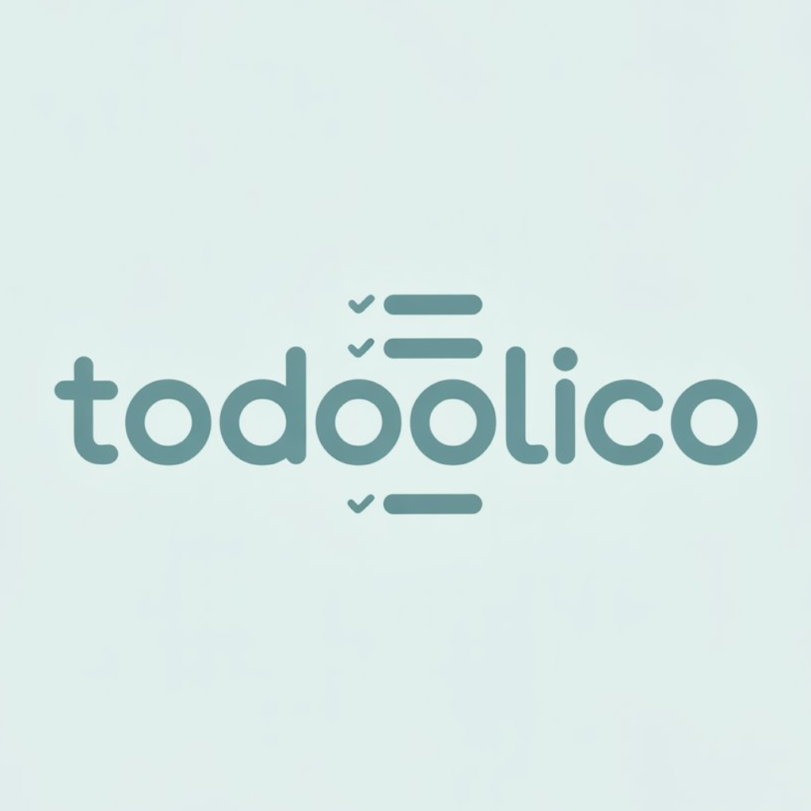

 ToDooliCo
Un organiseur minimaliste, o√π tout vous appartient vraiment.
Tâches, mots de passe, listes — hors ligne, sans inscription ni cloud.
Que peut faire ToDooliCo ?
Gestionnaire de tâches simple en liste
Tableau Kanban pour planifier visuellement
Gestionnaire de mots de passe intégré avec chiffrement
Interface épurée, sans distractions
Données stockées localement (Hive), totalement hors ligne
Compatible iOS, Android, macOS, Windows et Linux
Mode clair et mode sombre
Exemple de tableau Kanban dans l'application
À faire
En cours
Terminé
Faites défiler
üîê Gestionnaire de mots de passe üôà
ToDooliCo vous propose une solution simple et sécurisée pour stocker vos mots de passe et données sensibles directement dans l’application. Toutes les informations sont chiffrées localement avec des algorithmes modernes, garantissant la confidentialité de vos données.
- Aucune synchronisation ni stockage cloud – tout reste sur votre appareil
- Accès rapide grâce à une interface claire et intuitive
- Création, modification et suppression faciles
- Protection par mot de passe maître ou biométrie (si prise en charge)
- Fonctionne entièrement hors ligne, sans connexion internet
Avec ToDooliCo, vos mots de passe sont entre de bonnes mains — les vôtres.
Pour qui ?
- Ceux qui recherchent la simplicité sans sacrifier la puissance
- Développeurs, designers, professionnels du numérique
- Utilisateurs hors ligne ou soucieux de leur vie privée
- Ceux qui en ont assez des applications trop complexes pour de simples tâches
- Toute personne qui veut un « organiseur silencieux »
ü߆ Les principes de ToDooliCo
- üßò Minimalisme comme philosophie
- üîí Confidentialit√© sans compromis
- ⚡ Simplicité sans apprentissage
üöÄ Rejoignez la b√™ta
Disponible sur toutes les plateformes. On vous prévient dès que votre version est prête.
Je veux un accès anticipé